Case 01
Et varmere og mer inkluderende uttrykk for Den norske kirke
[Én–to setninger som oppsummerer caset: hva utfordringen var, og hva du bidro med.]
- Kunde
- Den norske kirke
- Min rolle
- [Rolle]
- Periode
- [Fra – til]
- Team
- [F.eks. utviklere, PO, innholdsdesignere, redaktører]
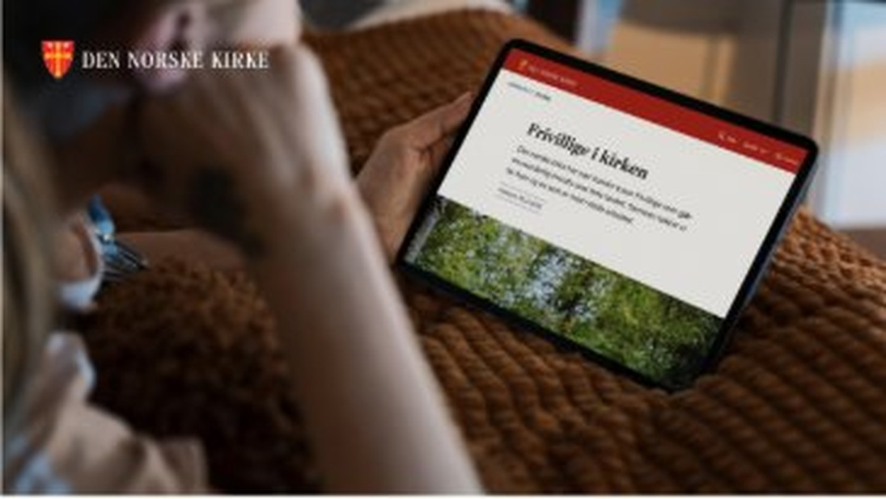
Utgangspunktet
[Beskriv bakgrunnen: hvem brukerne er, hva som ikke fungerte, og hvorfor arbeidet var nødvendig.]
Det første målet var å gi uttrykket mer varme og gjøre det mer inkluderende.
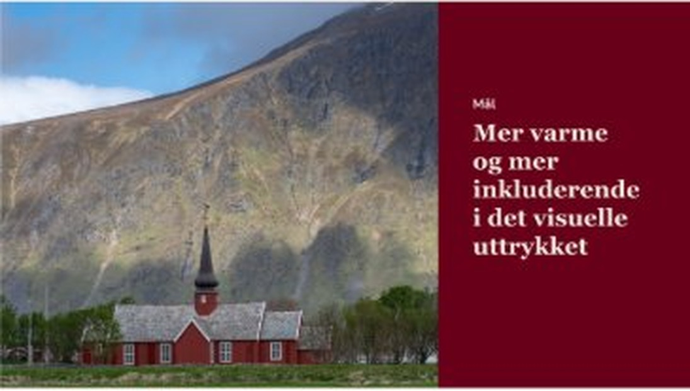
Designsystem og komponenter
[Forklar hva du gjorde: komponentbibliotek, farger, typografi, ikoner og tilstander. Nevn gjerne hvordan systemet ble brukt av utviklerne.]
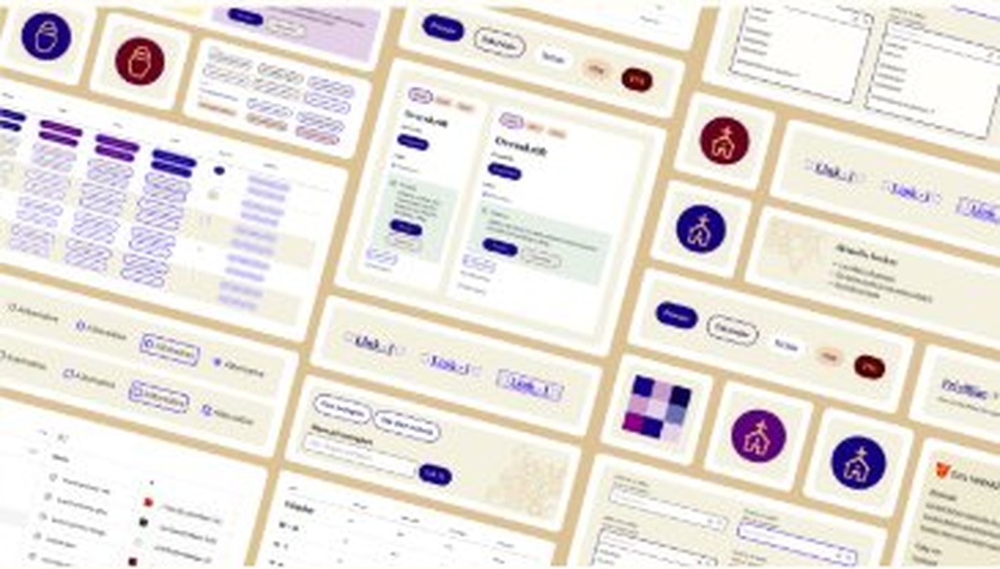
Mobil først
[Beskriv hvordan du løste «Våre frivillige» og relaterte sider på mobil, og hvilke valg du gjorde sammen med innholdsdesignere og redaktører.]
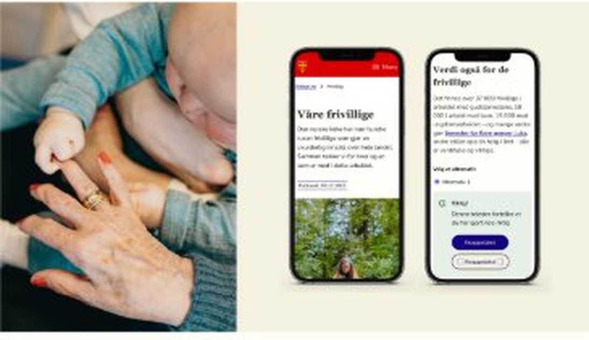
Ikoner og illustrasjon
[Fortell hvorfor ikonene og illustrasjonene ble utviklet, og hvordan de bidrar til varme og gjenkjennelse.]
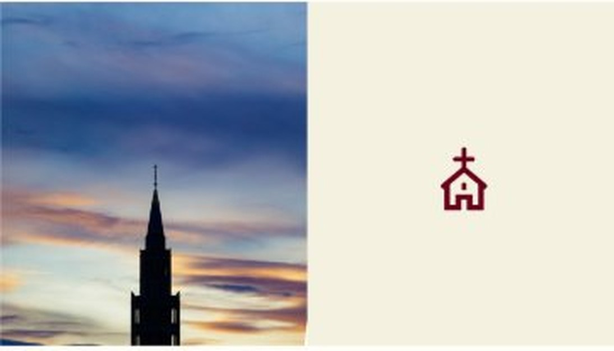
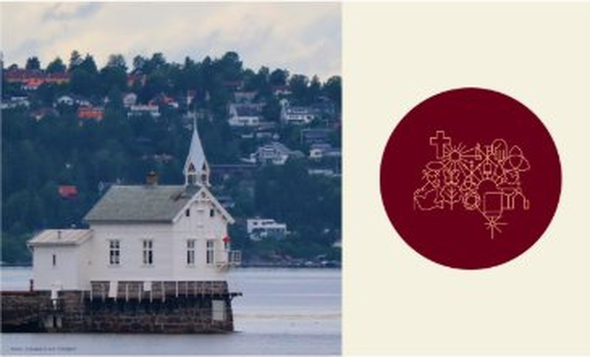
Prosess og wireframes
[Beskriv prosessen din: workshops, skisser, brukertester og hvordan funn ble til beslutninger.]
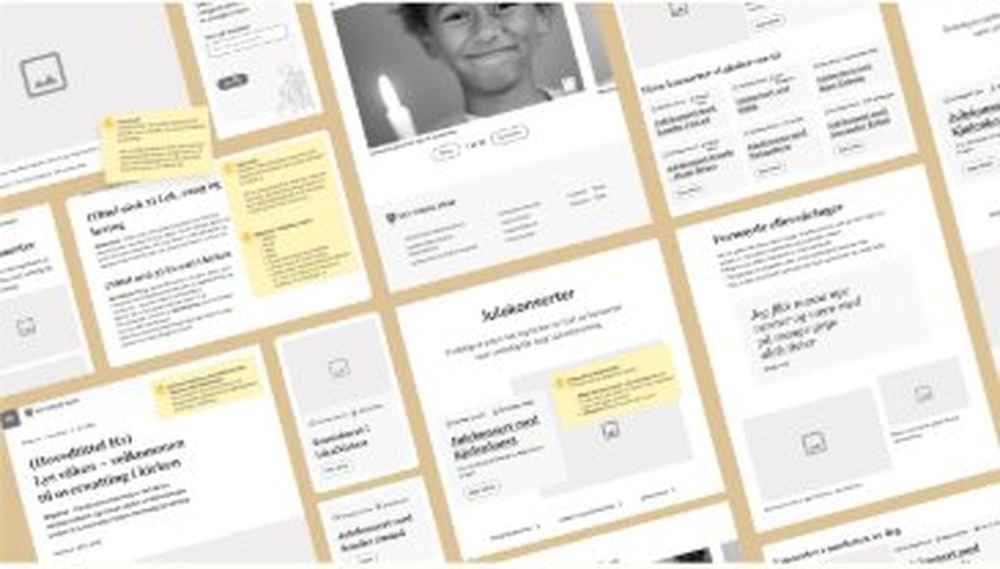
Universell utforming
Det andre målet var å svare på krav til universell utforming.
[Forklar kravene dere svarte på, hvordan du jobbet med kontrast, struktur og tilgjengelige komponenter, og hvordan det ble testet.]
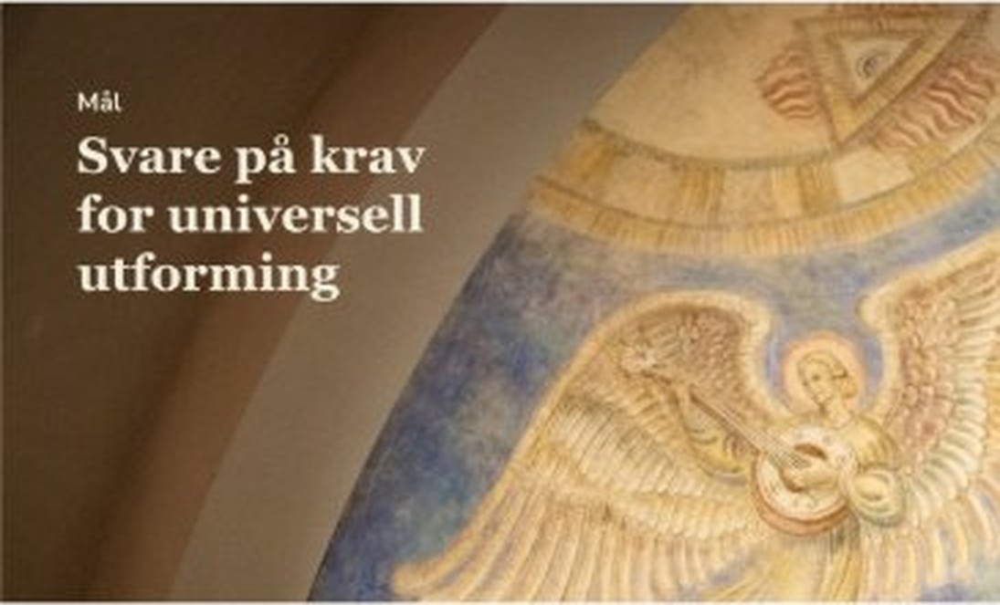
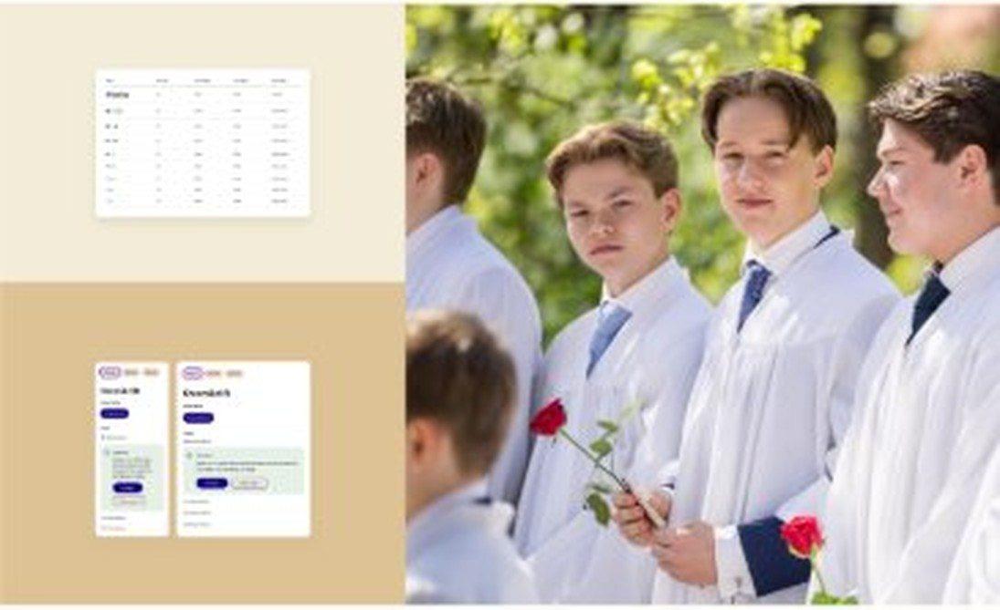
Resultat
[Hva ble levert, og hva ble effekten? Tall, tilbakemeldinger eller observasjoner gjør dette sterkere.]
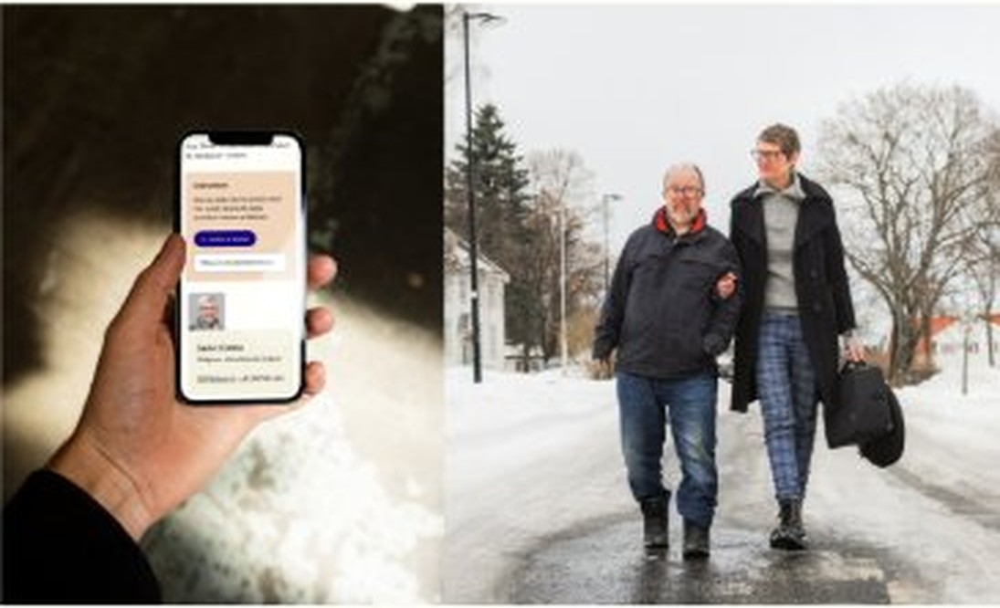
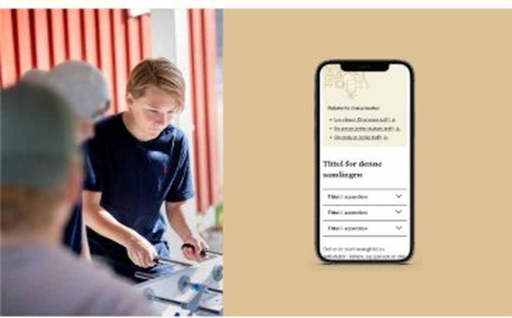